Technická řešení pro průmyslové provozy
Dlouholeté zkušenosti z průmyslového prostředí využíváme při servisu výrobních technologií, čištění vodních a chladicích okruhů, stěhování výrobních strojů a dalších specializovaných technických pracích. Působíme v ČR i zahraničí.
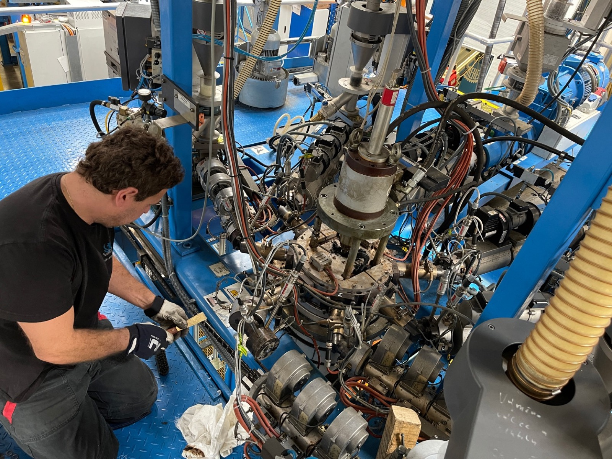
Co nabízíme
Čištění vodních a chladicích okruhů
Zajišťujeme čištění vodních a chladicích okruhů průmyslových zařízení. Na konci čištění vystavíme protokol o stavu okruhu a jeho průchodnosti včetně fotodokumentace.
Průmyslové elektroinstalace a elektrorevize
Provádíme elektroinstalační práce a elektrorevize pro průmyslové objekty, stroje a výrobní technologie. Zaměřujeme se na průmyslová zařízení, komerční prostory i skladové haly.
Výroba a opravy topných těles
Provádíme výrobu a opravy topných těles pro průmyslové využití. Vyrábíme topné kruhy, remikanitová i keramická tělesa, topné plochy, topné patrony i čidla.
Servis výrobních technologií
Zajišťujeme servis vstřikovacích, vytlačovacích, pneumatických a hydraulických systémů ve výrobních provozech. Nabízíme i jejich reverzní engineering a servis přímo ve vašem provozu.
Rozvody materiálů a energií
Realizujeme technické rozvody materiálů a energií podle požadavků konkrétního výrobního provozu. Zajišťujeme dopravu materiálu, vakuové rozvody i rozvody chladicích médií a vzduchu.
Stěhování výrobních strojů
Pomůžeme vám se stěhováním a technickým zajištěním výrobních strojů a zařízení. Stěhujeme soustruhy, CNC stroje, sila na materiál i vstřikolisy.
Čištění vodních a chladicích okruhů
Zanesené nebo nedostatečně udržované vodní a chladicí okruhy snižují účinnost výrobních technologií a zvyšují riziko poruchy.
K čištění používáme chemické prostředky kompatibilní s materiálem čištěného zařízení. Na konci čištění vystavíme protokol o stavu okruhu a jeho průchodnosti včetně fotodokumentace pořízené endoskopem.
Poptat čištění okruhů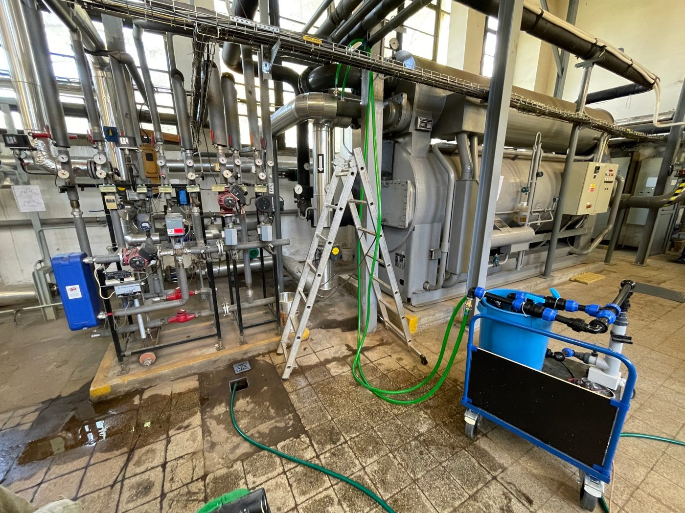
Zařízení, u kterých čištění provádíme
Chladicí věže a tepelné výměníky
Čistíme chladicí věže a tepelné výměníky, aby si udržely svůj tepelný výkon a průchodnost.
Vstřikovací formy
Zajišťujeme čištění chladicích okruhů vstřikovacích forem používaných při zpracování plastů.
Bojlery a chladicí okruhy lisů a linek
Čistíme bojlery i chladicí okruhy vstřikovacích lisů a vytlačovacích linek.
Jak čištění probíhá
-
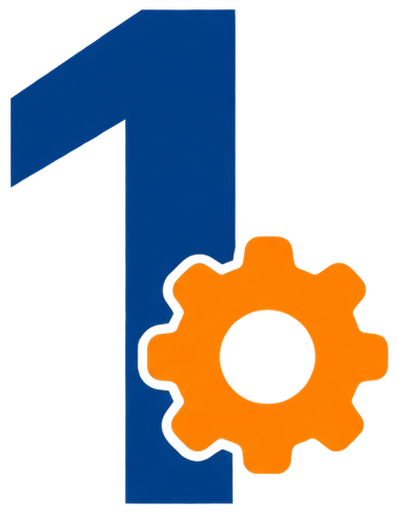
Prohlídka a diagnostika
Stav a zanesení okruhu nejprve zjistíme, v hůře přístupných místech i pomocí endoskopu.
-
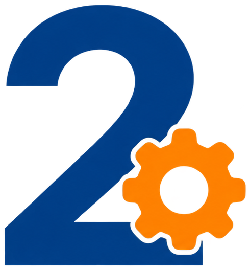
Čištění vhodnou chemií
K čištění používáme prostředky vybrané tak, aby byly kompatibilní s materiálem konkrétního zařízení.
-
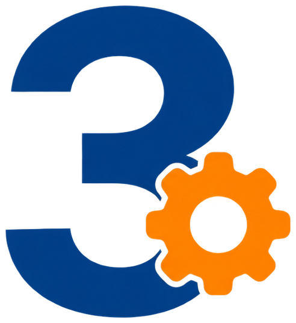
Kontrola a protokol
Ověříme průchodnost okruhu a na závěr vystavíme protokol o jeho stavu včetně fotodokumentace.
Výroba a opravy topných těles
Topná tělesa vyrábíme na základě dodané dokumentace nebo starého nefunkčního vzorku. U složitějších zakázek je potřeba konzultace přímo ve vašem provozu.
Jde o velmi specifickou zakázkovou výrobu, kterou přizpůsobujeme konkrétnímu zařízení. Pokud topné těleso potřebujete vyrobit nebo opravit, napište nám a probereme technické parametry i termín realizace.
Poptat výrobu topných těles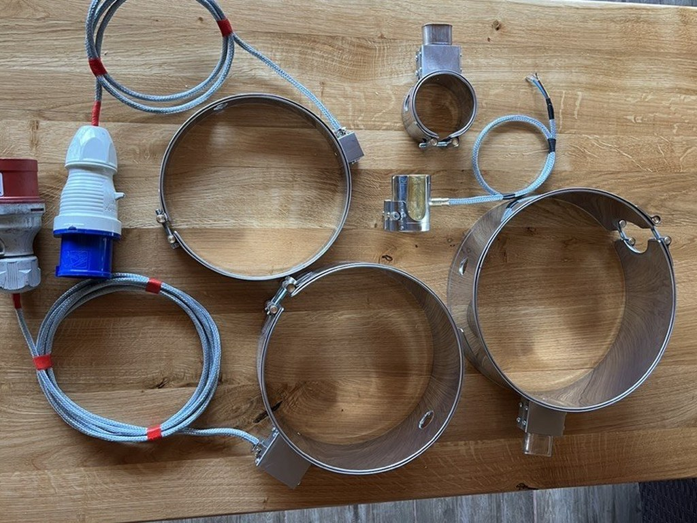
Co vyrábíme a opravujeme
Topné kruhy do vstřikolisů a vytlačovacích linek
Topná tělesa válcová (remikanitová i keramická)
Topné plochy a výseče (remikanitové i keramické)
Vysokoteplotní keramické zástrčky
Topné patrony
Čidla
Otázky a odpovědi
Realizujete průmyslové zakázky i mimo Českou republiku?
Ano. Na průmyslových projektech pracujeme v České republice, na Slovensku i v Polsku.
Provádíte servis přímo ve výrobních provozech?
Ano. Zajišťujeme servis výrobních technologií přímo podle potřeb konkrétního provozu.
Máte pojištění odpovědnosti za škodu?
Jsme pojištěni na 20 mil. Kč a na 500 000 Kč pro případ nemajetkové újmy.
Provádíte termografické měření zařízení?
Ano. Termokamerou měříme rozvaděče, otopné pásy i další zařízení a výsledek zpracujeme do protokolu.
Můžete zajistit více technických prací v rámci jedné zakázky?
Ano. Rozsah prací vždy řešíme podle konkrétního projektu a technických požadavků vašeho provozu.
Jak likvidujete chemické látky, které používáte na chemické čištění?
Veškeré chemické látky, které používáme k čištění vodních, chladicích a otopných okruhů, jsou ekologicky odbouratelné. Ke všem látkám vlastníme bezpečnostní listy.
Zajišťujete i dopravu při stěhování strojů?
Vlastní dopravu nemáme, spolupracujeme ale s dopravními firmami po celé EU.
Nabízíte i preventivní a prediktivní údržbu?
Ano. Jsme specialisté na preventivní, prediktivní i korektivní údržbu. Vypracujeme standardy a proškolíme vaše techniky.
Ukázky naší práce
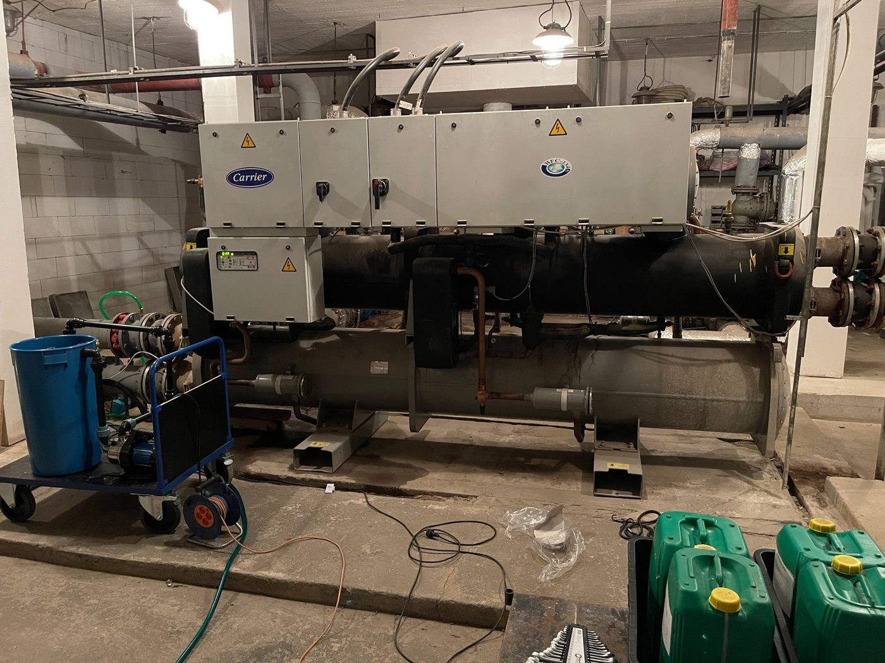
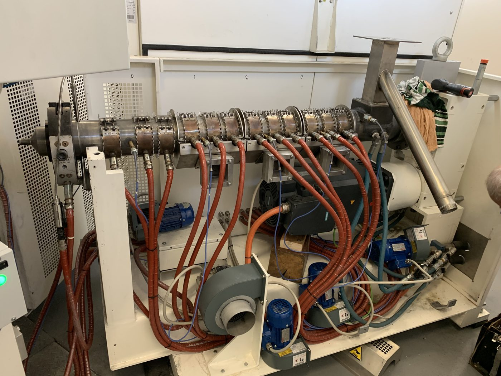
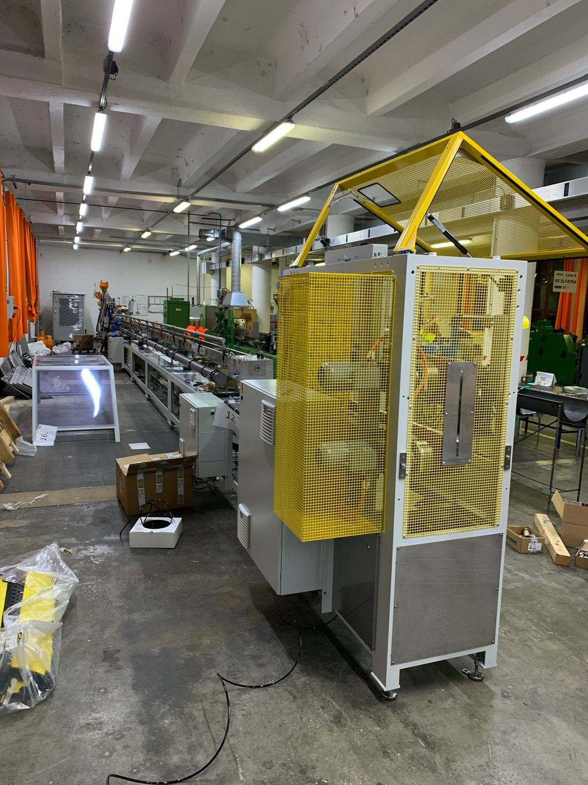
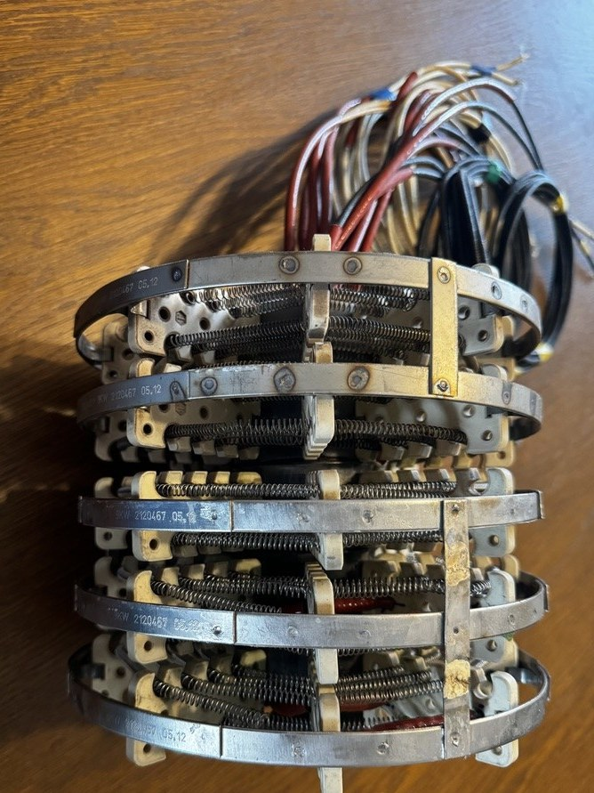
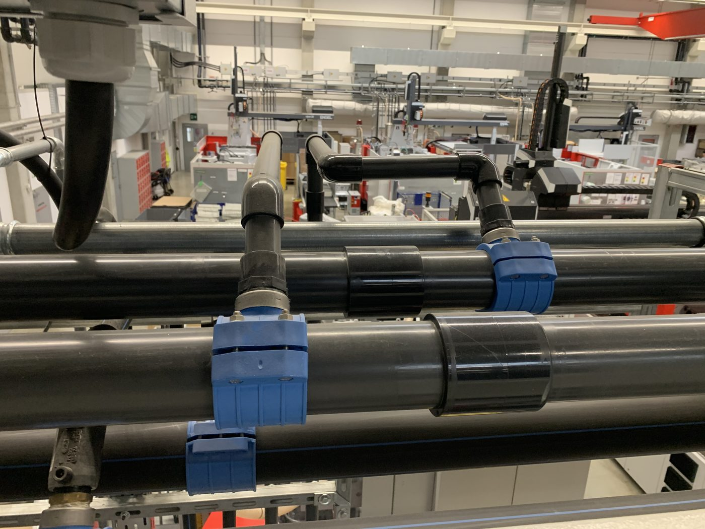
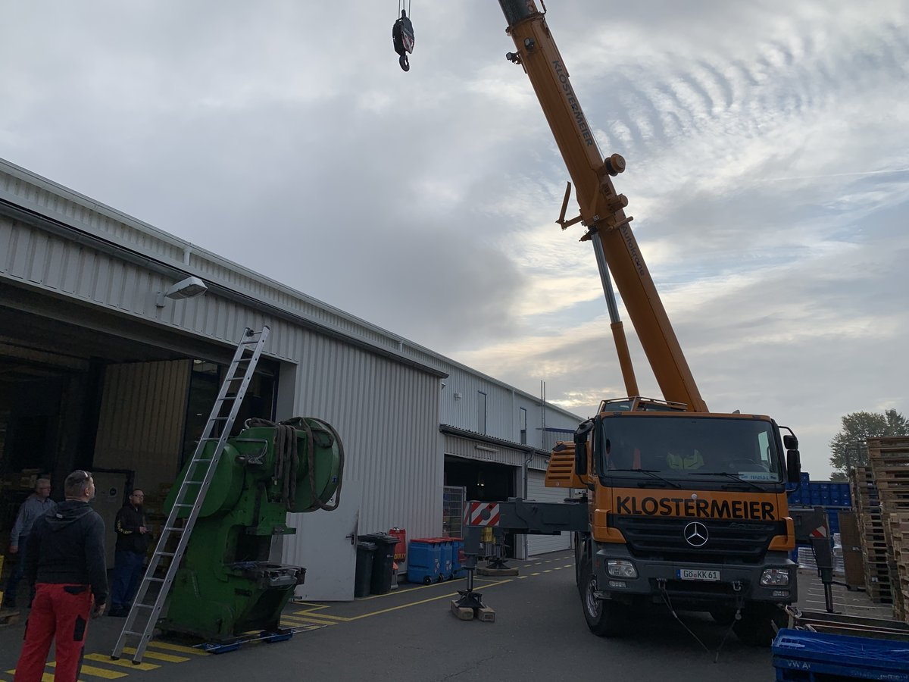
Řešíte technický projekt ve výrobním provozu?
Popište nám, co potřebujete zajistit. Probereme s vámi technické požadavky projektu a možnosti realizace.
Nezávazná poptávka